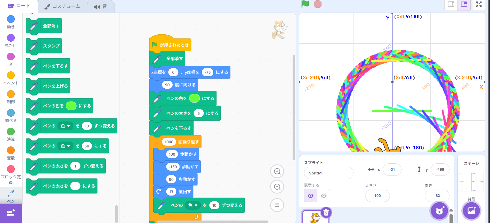
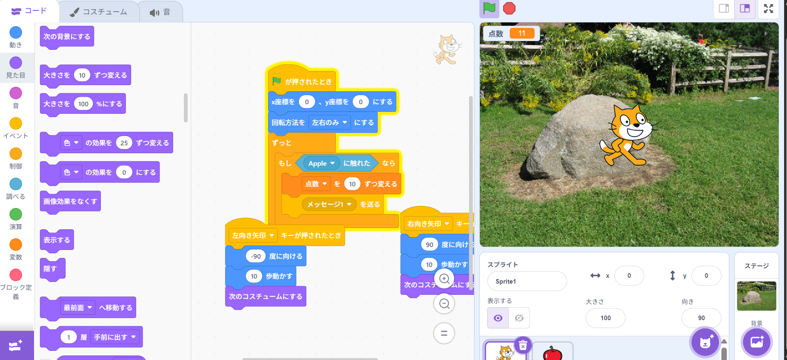

1-1 サイエンスアート

1.内容
学習した内容を説明する文章を
自分で考えて作成する（50文字以上．100文字程度を推奨．※生成AIを使ってはいけない）
動きのブロックを使うことで、猫を動かすことができる。ペンの追加ボタンを押して、
そのペンのブロックを使うことで、画面上にペンをつけることができる。
動きのブロックを使って、回転したり、歩かせたりすることで、猫を動かすることで、ペンが動き、色を付けることができる。
2.感想
学習した内容を実践したときに自分が感じた感想を
自分で考えた文章で作成する（50文字以上．100文字程度を推奨．※生成AIを使ってはいけない）
猫を動かすことは知っていたけど、ペン機能があることは知らなかった。また動かす位置や角度を変えることで、形がいろいろ変化することがおもしろかった。
また位置や角度を計算することで、思い通りの形になるので、形を考えて、それをするために、計算することも面白いと思った。
1-2 ゲーム

1.内容
学習した内容を説明する文章を
自分で考えて作成する（50文字以上．100文字程度を推奨．※生成AIを使ってはいけない）
動きを制限することで、開発者意図している動きにできる。猫が動いたときにコスチュームを変化させることで、動いてるように見せることができる。
また、ものに触れたときにメッセージ、点数をカウントさせる
更に、リンゴが落ちるところを乱数で調整することでランダムに落ちるようにできる。
2.感想
学習した内容を実践したときに自分が感じた感想を
自分で考えた文章で作成する（50文字以上．100文字程度を推奨．※生成AIを使ってはいけない）
この学んだことを使って、猫が打った銃の弾が当たったら、ポイントが入るとかだったら自由度が上がると思った。
乱数があることで、ランダムにモノが動いたりするので、この乱数というのはゲームでは大事なもとだと考えた。